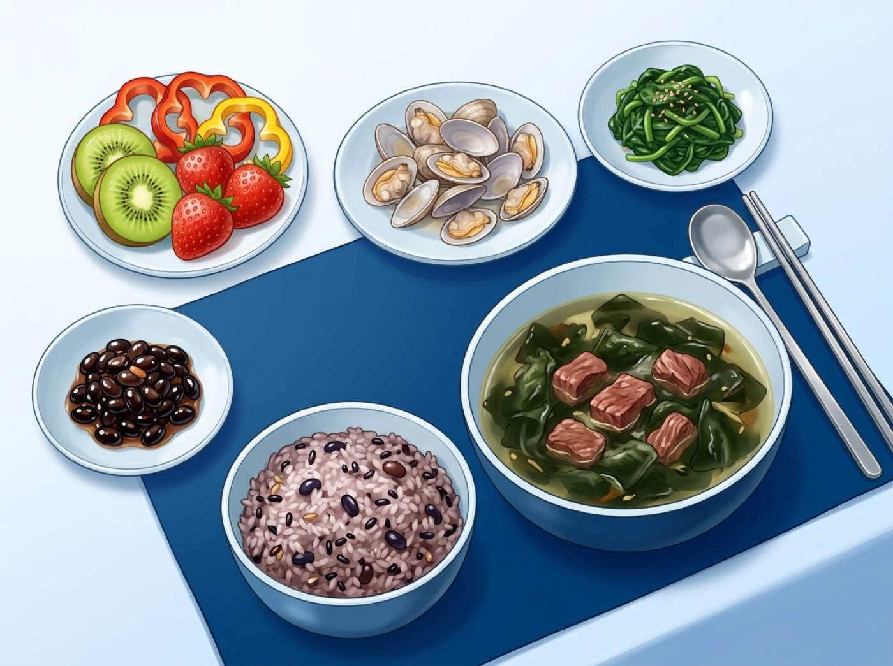

한눈에 보는 핵심 수치
한눈에 보는 핵심 수치
철이 특히 많은 음식
굴 7mg
100g(5~6개) · 하루 권장량의 39%
진단 기준 (혈색소)
<12
여성 g/dL · 남성 <13
하루 권장 섭취 (철분)
18 / 8
mg · 가임여성 / 남성
 헴철 vs 비헴철 — 흡수율 3배 차이
헴철 vs 비헴철 — 흡수율 3배 차이
| 식품 | 분량 | 철분 (권장량 대비) | 식품 | 분량 | 철분 (권장량 대비) |
|---|---|---|---|---|---|
| 굴 | 100g | 7mg (39%) 5~6개 | 검은콩·렌틸콩 | 삶은 100g | 약 3.3mg (18%) ½공기 |
| 간 (소·돼지) | 50g | 6.2mg (34%) 임신부 주의 | 시금치·근대 | 100g | 2.7mg (15%) 반드시 데쳐서 |
| 바지락·홍합 | 100g | 3~6mg 조개류 | 호박씨·해바라기씨 | 30g | 2.3mg |
| 소고기 안심·등심 | 100g | 2.6mg (14%) 붉은 살코기 | 두부 | ½모 100g | 1.5mg (8%) 단백질 보조 |
| 정어리·고등어 | 100g | 1.5~2.7mg | 검은깨·들깨 | 1큰술 | 1.4mg 요거트 토핑 |
| 닭고기 다리살 | 100g | 1.3mg 가슴살보다 많음 | 달걀 노른자 | 1개 | 1mg (6%) 간편 보충 |
| 돼지고기 안심 | 100g | 1.1mg 지방 적은 부위 | 건자두·건포도 | 30g | 1mg 간식 대체 |
괄호 안 % = 가임기 여성 하루 권장량(18mg) 대비. 철분 함량은 일반적 평균치이며 조리법·품종에 따라 차이가 있습니다.
음식 속 철 흡수 — 돕는 것 vs 방해하는 것

| 함께 드세요 | 식후 2시간은 피하세요 |
|---|---|
| 비타민 C — 음식 속 식물성 철(비헴철) 흡수를 돕습니다 (오렌지·키위·딸기·파프리카) | 커피·녹차·홍차 (탄닌) — 철 흡수를 크게 떨어뜨립니다. 식후 2시간 뒤에 |
| 구연산·유기산 — 식초·레몬즙 곁들이기 | 우유·요거트·치즈 (칼슘) — 철분과 흡수 경쟁 |
| 고기와 함께 먹기 (육류 인자) — 채소와 고기를 같이 먹으면 비헴철 흡수 ↑ | 통밀·콩의 피틴산 / 시금치의 옥살산 — 데치기 + 비타민 C로 상쇄 |
 철분 흡수를 높이는 하루 식단 (철분 약 14mg + 비타민 C 충분)
철분 흡수를 높이는 하루 식단 (철분 약 14mg + 비타민 C 충분)
| 끼니 | 메뉴 | 포인트 |
|---|---|---|
| 아침 · 7~8시 | 잡곡밥 + 소고기 다짐 미역국 1/2공기 + 데친 시금치 + 오렌지주스 100ml | 비타민 C로 비헴철 흡수 ↑ |
| 점심 · 12~14시 | 현미밥 + 닭다리살 구이 + 검은콩 조림 + 파프리카 샐러드(레몬 드레싱) + 키위 1개 | 헴철 + 비헴철 동시 |
| 저녁 · 18~19시 | 현미밥 + 굴전 또는 바지락 미역국 + 두부조림 + 브로콜리 + 딸기 5개 | 굴 100g ≈ 철분 7mg |
| 간식 · 식간 | 건자두 30g + 호박씨 한 줌 / 또는 요거트 + 검은깨 1큰술 | 커피·녹차는 식후 2시간 후 |
철분제 먹는 법(시간·간격·기간)은 「철분제 복용 시 주의사항」 한 장에 모았습니다 —
edu.gwanggyobarun.com/handouts/medication/iron-supplement/
edu.gwanggyobarun.com/handouts/medication/iron-supplement/
진료실 설명 자료 — 철결핍성 빈혈: edu.gwanggyobarun.com/decks/heme/iron-deficiency-anemia/